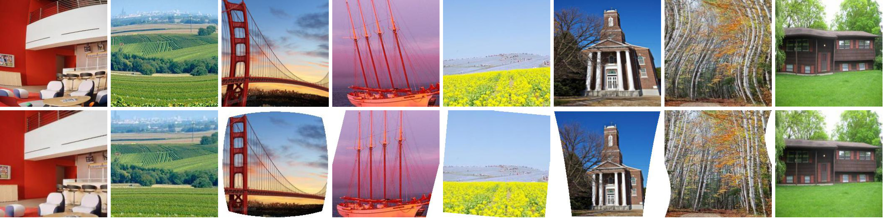

Blind Geometric Distortion Correction on Images Through Deep Learning
Xiaoyu Li 1
Bo Zhang 1
Pedro V. Sander 1
Jing Liao 2
1 The Hong Kong University of Science and Technology
2 City University of Hong Kong

Fig. 1. Our proposed learning-based method can blindly correct images with different types of geometric distortion (first row) providing high-quality results (second row).
Abstract
We propose the first general framework to automatically
correct different types of geometric distortion in a single
input image. Our proposed method employs convolutional
neural networks (CNNs) trained by using a large synthetic
distortion dataset to predict the displacement field between
distorted images and corrected images. A model fitting
method uses the CNN output to estimate the distortion parameters, achieving a more accurate prediction. The final
corrected image is generated based on the predicted flow
using an efficient, high-quality resampling method. Experimental results demonstrate that our algorithm outperforms
traditional correction methods, and allows for interesting
applications such as distortion transfer, distortion exaggeration, and co-occurring distortion correction.
Downloads
BibTeX
@inproceedings{li2019blind,
title={Blind Geometric Distortion Correction on Images Through Deep Learning},
author={Li, Xiaoyu and Zhang, Bo and Sander, Pedro V and Liao, Jing},
booktitle={Proceedings of the IEEE Conference on Computer Vision and Pattern Recognition},
pages={4855--4864},
year={2019}
}
Acknowledgements
We thank the anonymous reviewers for their valuable comments.
This work was partly supported by CityU of Hong Kong Start-up Grant No. 7200607/CS, and Hong Kong GRF Grant No. 16208814.